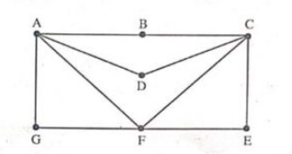
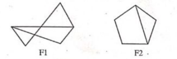

B.Tech. III Semester
Examination, December 2023
Grading System (GS)
Max Marks: 70 | Time: 3 Hours
Note:
i) Attempt any five questions.
ii) All questions carry equal marks.
a) Out of 120 students surveyed, it was found that 20 students have studied French, 50 students have studied English, 70 students have studied Hindi, 5 have studied English and French, 20 have studied English and Hindi, 10 have studied Hindi and French, only 3 students have studied all the three languages. Find how many students have studied:
i) Hindi alone
ii) French alone
iii) English, but not Hindi
iv) Hindi, but not French (Unit 1)
b) If $R$ be a relation in the set of integers $\mathbb{Z}$ defined by
$R = \{(x, y) : x \in \mathbb{Z}, y \in \mathbb{Z}, (x - y) \text{ is multiple of } 3\}$
Show that it is an equivalence relation. (Unit 1)
a) If $f : \mathbb{R} \to \mathbb{R}$ is defined by:
$$ f(x) = \begin{cases} 3x - 12, & x > 3 \\ 2x^2 + 3, & -2 < x \le 3 \\ 3x^2 - 7, & x \le -2 \end{cases} $$
Find $f^{-1}(3)$, $f^{-1}(0)$, and $f^{-1}(-2)$. (Unit 1)
b) Show that
$1^2 + 2^2 + 3^2 + \dots + n^2 = \dfrac{n(n+1)(2n+1)}{6}, \quad n \ge 1$
by mathematical induction. (Unit 1)
a) Prove that $F = \{a + b\sqrt{2} \mid a, b \text{ are rational}\}$ is a field. (Unit 2)
b) Define the following:
i) Symmetric Group
ii) Normal Subgroup
iii) Homomorphism (Unit 2)
a) Construct the truth table of the following formula:
i) $(\sim(p \lor (q \lor r)) \Leftrightarrow ((p \lor q) \land (p \lor r)))$
ii) $((\sim q \Rightarrow \sim p) \Rightarrow (p \Rightarrow q))$ (Unit 3)
b) Write the negation of the following:
i) If the determinant of a system of linear equations is zero then either the system has no solution or has an indefinite number of solutions.
ii) Either today is not a Sunday or today is not a Wednesday. (Unit 3)
a) Show that the proposition $\sim(p \land q)$ and $\sim p \lor \sim q$ are logically equivalent. (Unit 3)
b) Obtain the conjunctive normal form (CNF) of:
i) $p \land (p \Rightarrow q)$
ii) $\sim p \Rightarrow [r \land (p \Rightarrow q)]$ (Unit 3)
a) Determine whether the graphs $F_1$ and $F_2$ are isomorphic. (Unit 4)

b) Find an Euler Path in the graph below. (Unit 4)

a) Define a lattice. Let $(L, \le, \lor, \land)$ be a lattice, and $a, b, c, d \in L$ be such that $a \le b$ and $c \le d$. Show that $a \lor c \le b \lor d$ and $a \land c \le b \land d$. (Unit 5)
b) Show that $D_{12}$ and $D_{18}$ are isomorphic lattices. Further, show that none is isomorphic to the lattice $D_{20}$. (Unit 5)
a) Show that $a_n = c_1 2^n + c_2 4^n$ is a solution of the recurrence relation $a_n - 6a_{n-1} + 8a_{n-2} = 0$. (Unit 5)
b) Find the sequence having the generating function $G(x)$ given by: $$ G(x) = \frac{x}{1 - 2x} $$ (Unit 5)